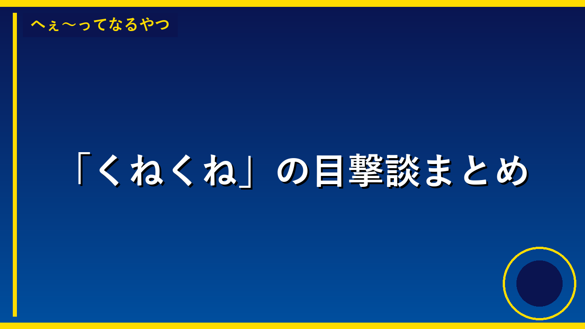

自宅で不正に「黒色火薬」などを所持していたか 42歳の男を逮捕
42歳の男の人が、家の中で許可なく「黒色火薬」という爆発する物質を持っていたため、警察に捕まりました。黒色火薬は銃や花火などに使われる危険な物で、勝手に持つことは法律で禁止されています。このような危険な物を持っていた人がいると、事故や犯罪に使われる可能性があるため、警察が厳しく調べて捕まえるのです。

釈放されたtimelesz猪俣周杜、SNSでは厳しい声 今後は「茨の道」か
申し訳ありませんが、記事の内容を確認することができません。リンク先を開くことができないため、どのようなニュースかわかりません。 もし可能でしたら、記事の本文をコピー&ペーストしていただければ、小学生にもわかるように要約することができます。

群馬の住宅で女性死亡 指名手配の男は死亡女性の長女に福縁を迫ったか
申し訳ありませんが、記事の内容が表示されていないため、正確な要約ができません。記事本文をコピーして貼り付けていただければ、小学生にもわかるように要約いたします。
ナッツを多く食べる人、認知テストで高成績の傾向 豪州チームが1700人以上を分析
ナッツをたくさん食べる人は、脳の働きをはかるテストで良い成績を取る傾向があることがわかりました。オーストラリアの大学の研究チームが1700人以上を調べて、ナッツに含まれる栄養が脳の健康に良い影響を与えることを発見したのです。この研究は、毎日の食事にナッツを取り入れることで、記憶力や判断力などの頭の働きが良くなるかもしれないことを教えてくれるので、とても大切な発見です。
顔面に電気を流すと記憶力アップ？ あごにパッチ電極を貼り人間で実験、結果は……
研究者たちが、あごに貼ったパッチで顔の神経に電気を流すと、記憶力が良くなるかもしれないことを発見しました。この研究は、人間の脳が新しいことを覚えるときに、電気刺激がどのように役立つかを調べたものです。もし本当に効果があれば、勉強が苦手な人や、記憶が弱くなった高齢者の人たちを助けることができる可能性があります。
アニメを支える外国人材に“逆風” 日本在住の声優・アニメーターが抱く「不安の正体」とは
日本のアニメは、世界中から来た外国人の声優やアニメーターが力を合わせて作られています。しかし、10月から外国人が日本に永く住むために必要な許可の料金が20倍に上がってしまい、多くの外国人スタッフが不安を感じています。ロシアやフランスから来たスタッフたちは、これからも日本でアニメを作り続けられるか心配になっているのです。外国人材が日本を去ってしまうと、日本のアニメの質が落ちてしまう可能性があります。

ゲレロが年俸発言を謝罪するも、ファンから「偽物」と批判が続く
ブルージェイズという野球チームの選手・ゲレロが、給料についての悪い発言をしたので謝罪しました。しかし、いったん謝罪を断ってから謝ったので、ファンたちは「本当の謝罪ではないのでは」と信じていません。監督はゲレロが頑張り屋だとかばっていますが、ファンの怒りはおさまっていない状況です。

卓球中国が日本に敗れ、選手層の構造的な欠如が浮き彫りに
卓球の世界で一番強いはずだった中国が、日本に試合で負けてしまいました。中国は若い選手を育てるのが遅れていて、選手が足りなくなってきたことが問題だとわかりました。中国のメディアは、もっと前から新しい選手を育てるべきだったのに、今になって言い始めたのはおかしいと怒っています。この敗北は、中国の卓球が強さを失いかけていることを示しています。

アロンソがスターンズ批判Tシャツを着て打撃練習、その後2本塁打を放つ
アロンソという野球選手が、昔いたメッツというチームの社長のことが気に入らないので、批判的なメッセージが書かれたTシャツを着て練習をしました。その後、アロンソは2本のホームランを打ちました。今シーズン、アロンソは43本のホームランを打っていて、リーグで一番たくさんホームランを打っているので、良い成績を出すことが昔のチームへの一番の返し方になりそうです。
釈放されたtimelesz猪俣周杜、SNSでは厳しい声 今後は「茨の道」か
申し訳ありませんが、記事の内容を読み込むことができません。リンク先のページにアクセスできないため、具体的な内容を確認することができません。 もし記事の内容をテキストで教えていただければ、小学生にもわかりやすく要約することができます。記事の文章をコピー＆ペーストしていただけますか？

VIVANTで悪役を演じた迫田孝也さん、関連ラジオ番組でMC力を発揮し話題に
迫田孝也さんは、人気ドラマ「VIVANT」で悪い役を演じました。そのあと、ラジオの番組で司会をしたところ、とても上手で、リスナーから「面白い」という声がたくさん上がりました。ドラマでは悪役でしたが、ラジオでは明るく楽しく番組を進める力があることがわかり、多くの人に注目されるようになりました。このことで、迫田孝也さんがドラマだけでなく、ラジオなど様々な番組で活躍できる才能を持っていることが広く知られるようになりました。

朝日奈央明かす…芸能界引退がよぎったアイドリング!!!の解散
アイドリング!!!というアイドルグループが解散することになりました。グループのメンバーである朝日奈央さんは、解散の知らせをグループチャットで知って、とてもショックを受け、芸能界をやめようかと考えたそうです。しかし、バカリズムという人から学んだ大切なことを思い出し、もっと頑張ろうと決めて、芸能界で活動を続けることにしました。この出来事は、つらい時でも自分の夢を忘れずに進み続けることの大切さを教えてくれます。

ラッコ冒険オープンワールド『Otterly Lost』ラッコがかわいすぎて“好評率100%”スタート。遠くの故郷を目指しつつ、動物たちをお手伝い
ラッコになって自然がいっぱいの世界を冒険するゲーム『Otterly Lost』が公開されました。このゲームはラッコがかわいいと大評判で、始まったばかりなのに評価が100%になっています。ラッコは遠くにある故郷に帰ることが目標で、その道のりで出会った動物たちを手伝ったり、いろいろな冒険をしたりします。このゲームはたくさんの人に愛されているので、これからもっと人気になるかもしれません。

1300人の武将で天下統一を目指せる三国志シム『英雄立志伝：三国志』、正式リリースで日本語対応し盛況博す。史実から民間伝承までてんこ盛り、“卑弥呼でも遊べる”天下統一ライフ
中国の古い歴史を舞台にした『英雄立志伝：三国志』というゲームが9月23日に日本語対応で正式公開されました。このゲームには1300人以上の武将が登場し、プレイヤーは彼らを率いて天下統一を目指すことができます。歴史の事実から昔話まで幅広い内容が盛り込まれており、多くの人がこのゲームを楽しんでいます。日本のプレイヤーが日本語で遊べるようになったことで、より多くの人がこのゲームに興味を持つようになりました。

『ロマンシング サガ3 デスティニーユナイテッド』先行プレイ感想。3Dの「ゆきだるま」に感動し「オーガ」の独自モデルに驚く、古さと新しさが融合するロマンシング体験
昔のゲーム「ロマンシング サガ3」を新しく作り直した「ロマンシング サガ3 デスティニーユナイテッド」というゲームが発表されました。このゲームは古いゲームの良さを保ちながら、3Dで美しくなった新しいグラフィックスが特徴です。ゲーム内のキャラクターや敵のデザインが昔とは違い、より詳しく細かく描かれているので、懐かしいけれど新しい感じがします。このリメイクによって、昔このゲームを遊んでいた人も、初めて遊ぶ人も、楽しめるゲームになっています。

「まどマギ 〈ワルプルギスの廻天〉」ソウルジェム＆ダークオーブがジュエリーに！ネックレスや18金・プラチナ製ミニフィギュアが登場
「魔法少女まどか☆マギカ」というアニメのキャラクターが持っている大切な宝石を、本当のアクセサリーにしてしまいました。ネックレスや、金やプラチナという高級な金属で作った小さい人形など、いろいろな種類が作られます。このニュースが重要なのは、アニメのキャラクターを実際に身につけられるものにして、ファンが好きなアニメをもっと身近に感じられるようにしたからです。このような商品が出ると、アニメファンはもっともっとそのアニメが好きになって、グッズをたくさん買うようになります。

「ムーミン」ご先祖さま＆リトルミイをデザイン♪秋の装いに活躍するバッグに新柄が登場
トーベ・ヤンソンさんが作った「ムーミン」というキャラクターの絵本の中に出てくる、ムーミンのご先祖さまとリトルミイというキャラクターの新しい絵柄のバッグが秋に売られることになりました。このバッグは、ムーミンの物語をもっと多くの人に知ってもらうために作られました。このバッグを使うことで、ムーミンのキャラクターが大好きな人だけじゃなく、まだ知らない人たちもムーミンに興味を持つようになると期待されています。

「Suicaのペンギン」栗の形をしたお顔がキュート♪マロンケーキ、プリンなど秋スイーツが販売中【池袋・ホテルメトロポリタン】
Suicaのペンギンキャラクターが栗の形をした可愛らしい顔のお菓子になって、池袋のホテルメトロポリタンで秋のスイーツとして売られています。マロンケーキやプリンなど、栗を使った美味しいお菓子がたくさんあります。このお菓子は、みんなが知っているSuicaのペンギンと秋の栗という二つの好きなものを組み合わせているので、お土産として欲しくなる人がたくさんいるでしょう。秋の季節限定だから、この季節にしか食べられない特別なお菓子です。

金利上昇時代に定期預金と個人向け国債、5年で約10万円の差が生まれる理由
銀行にお金を預ける時に、定期預金と個人向け国債という2つの方法があります。同じ金額を5年間預けた場合、個人向け国債の方が大手銀行の定期預金よりも約10万円多くもらえることがわかりました。これは金利（お金を預けた時にもらえる報酬）の違いが原因です。銀行のキャンペーン広告に惑わされず、自分がいつお金を使う予定かを考えて、どこに預けるかを選ぶことが大切だということです。

日本シェア1位のジンバルカメラ
DJIという会社が12年間かけて開発した「Osmo Pocket 4P」という小さなカメラが日本で一番売れています。このカメラはジンバルという揺れを止める仕組みがついているので、素人でも映画みたいにきれいで安定した動画が撮れることが特徴です。子どもやペットとの日常を撮った映像も、プロが撮ったようなレベルになるので、動画を作りたい人たちの間で話題になっています。

ポイント高還元狙う人へ…新規入会で申し込むべきは「鉄道系カード」だ
申し訳ありませんが、提供していただいたリンクの先の記事の内容が見えないため、要約することができません。記事の本文をコピー&ペーストしていただければ、小学生でもわかる言葉で3～4文の要約を作成いたします。

ネタニヤフ氏 国連演説に退席
申し訳ありませんが、リンク先の記事の内容が表示されていないため、要約することができません。記事の本文をコピー&ペーストしていただければ、小学生向けにわかりやすく要約させていただきます。

「外で過ごす文化」や「時間に対する考え方」母国フランスで再発見
フランスから日本に11年住んでいるフロリアン氏という人が、YouTubeで自分の故郷フランスの良さについて話しました。日本にいると、何もしないでいる時間が許せなくなってしまったと感じているそうです。でも、フランスでは何もしない時間を幸せだと思う文化があって、それは大切だということに改めて気づいたのです。この話は、日本とフランスで「時間の使い方」や「余裕を持つこと」についての考え方がとても違うことを教えてくれます。

3億円近く荒稼ぎ…韓国で人気公演チケットの「転売ヤー」捕まる
韓国で人気のコンサートチケットを買って、高い値段で売り直す悪い人たちが捕まりました。この人たちは3億円近いお金を不正に稼いでいました。チケットを高い値段で売り直すことは、本当に見たい人がチケットを買えなくなったり、高いお金を払わなければならなくなるので、とても悪いことです。だからこのような行為は取り締まられて、今回犯人が捕まったのです。
見たら精神病院へ？ネット怪談「くねくね」の正体と目撃談
2003年にネット掲示板で誕生した都市伝説「くねくね」。白い人型の何かを見た人が次々と精神を病んだという恐怖の目撃談は、今も語り継がれている。

朝イチの冷水が体に悪い理由 常温水に変えるだけで腸が活性化
健康のために朝一番に水を飲む人は多いが、冷たい水は胃や血圧に負担をかける可能性がある。常温か白湯に変えるだけで体への影響は大きく変わるという。